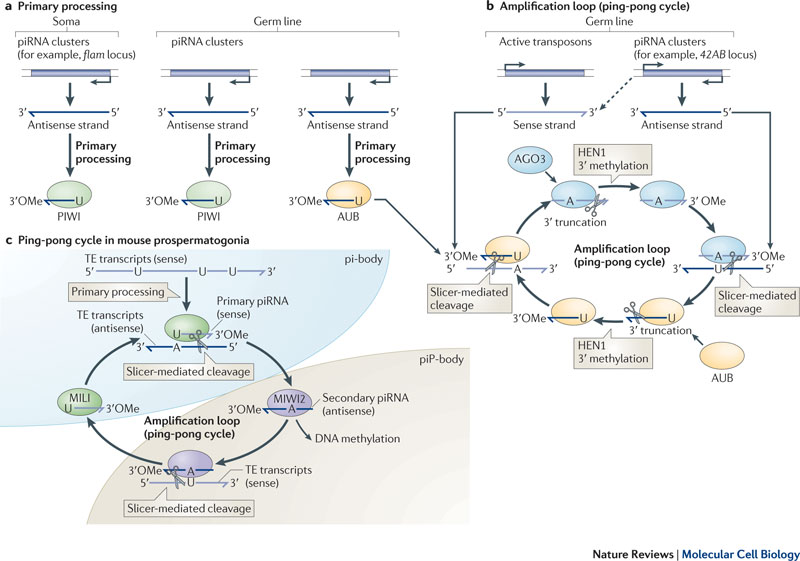

piRNA (Piwi-interacting RNA) is a type of small non-coding RNA. In this project, I helped develop a pipeline to identify novel piRNA from sequence alignment output, and tested mathematical models and optimization techniques to detect piRNA peaks.
